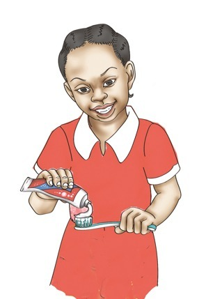
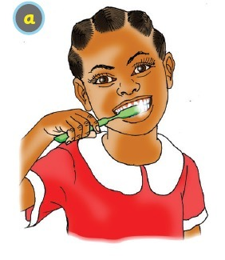
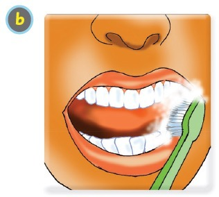
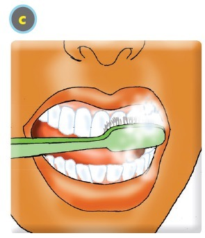
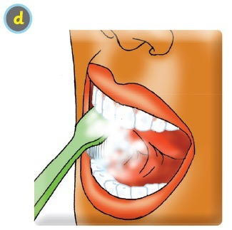

I know the steps for cleaning my mouth.
I know the steps for cleaning my mouth.
I clean my mouth by following these steps.


Two




I brush my teeth on both sides.
I clean my mouth by following these steps.





I brush my teeth on both sides.